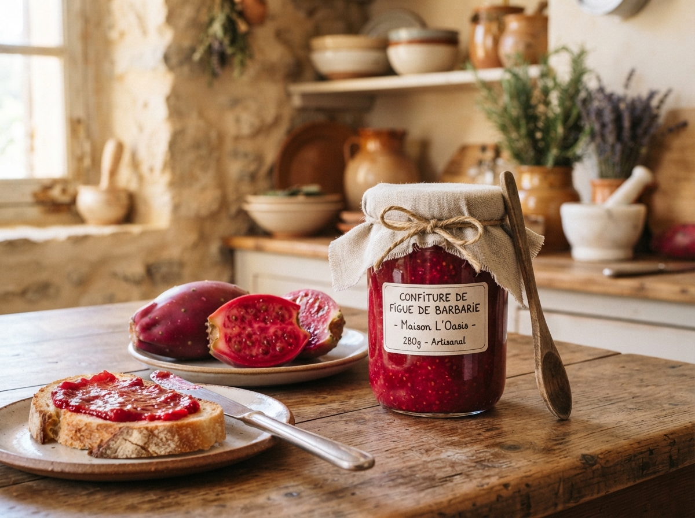
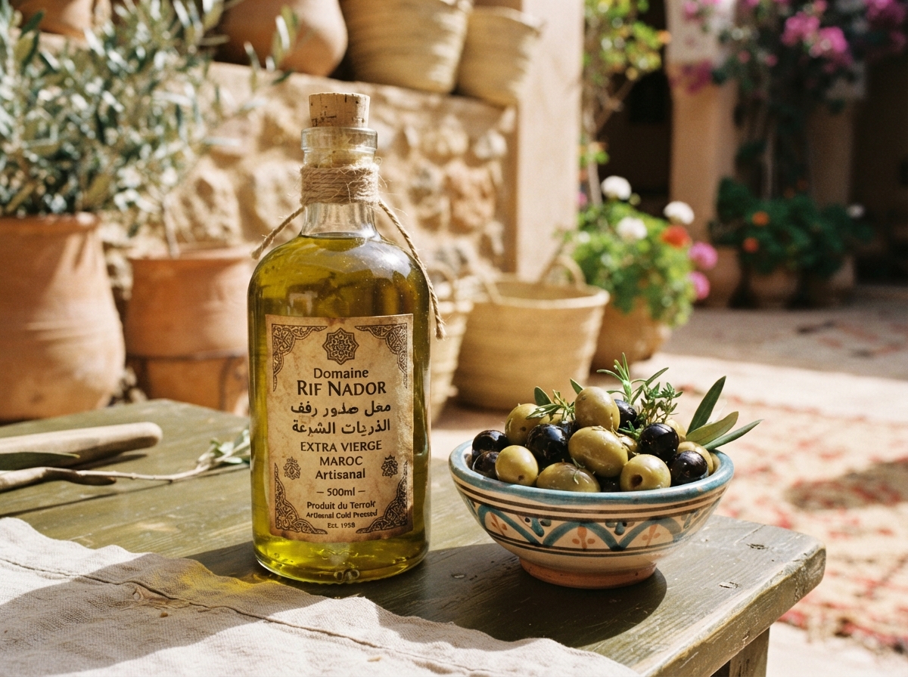
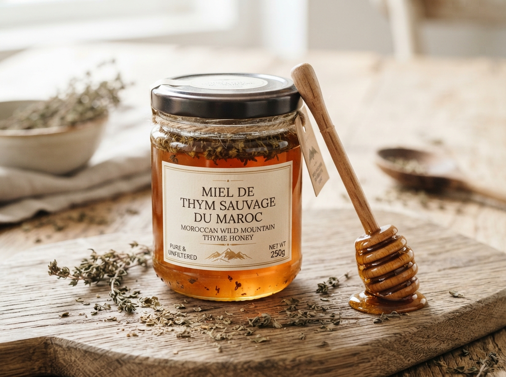
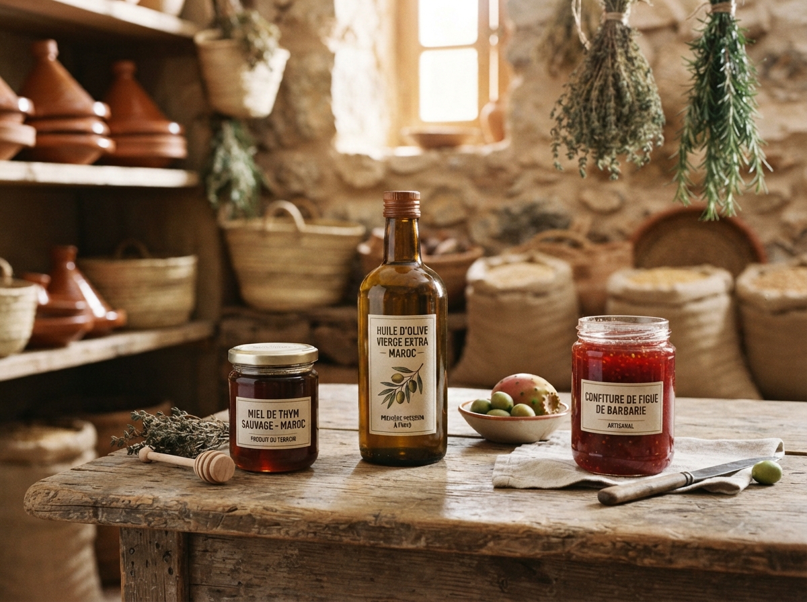

Confiture De Figues
Un Produit Naturel Et Qualité De Nador
90 DH

Huile d'olive
Un Produit Naturel Et Qualité De Nador
45 DH

Miel Pur De Nador
Un Produit Naturel Et Qualité De Nador
Découvrez notre coopérative féminine située à Nador, dans la région du Rif au Maroc. Nous nous engageons à promouvoir l'artisanat local et à soutenir les femmes de notre communauté.
Explorez nos produits uniques, apprenez-en davantage sur notre mission et contactez-nous pour toute demande ou collaboration.

Créée en 2015 dans la région de Nador, la coopérative Thimdrine réunit 25 femmes qui récoltent,
transforment et conditionnent elles-mêmes leurs produits.
Nos ruches sont installées dans les collines de thym sauvage du Rif, nos oliviers poussent sur les terrasses
familiales et nos figues de barbarie sont cueillies à la main chaque été.

Un Produit Naturel Et Qualité De Nador

Un Produit Naturel Et Qualité De Nador

Un Produit Naturel Et Qualité De Nador